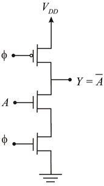
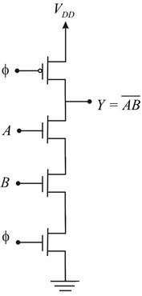
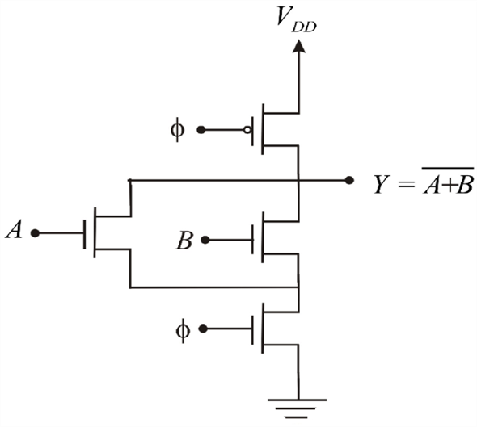
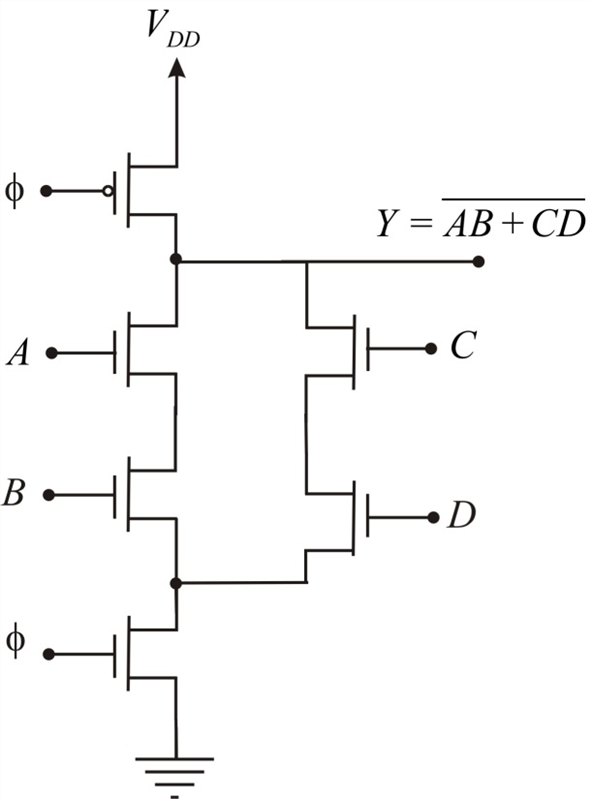

Refer to Figure 14.19 in the textbook.
Based on the dynamic logic circuit, the NOT gate logic diagram is as follows:

Figure 1
Figure 1 shows the implementation of NOT gate.
Based on the dynamic logic circuit, the NAND gate logic diagram is as follows:

Figure 2
Figure 2 shows the implementation of NAND gate.
Based on the dynamic logic circuit, the NOR gate logic diagram is as follows:

Figure 3
Figure 3 shows the implementation of NOR gate.

Figure 4
Figure 4 shows the implementation of the expression .